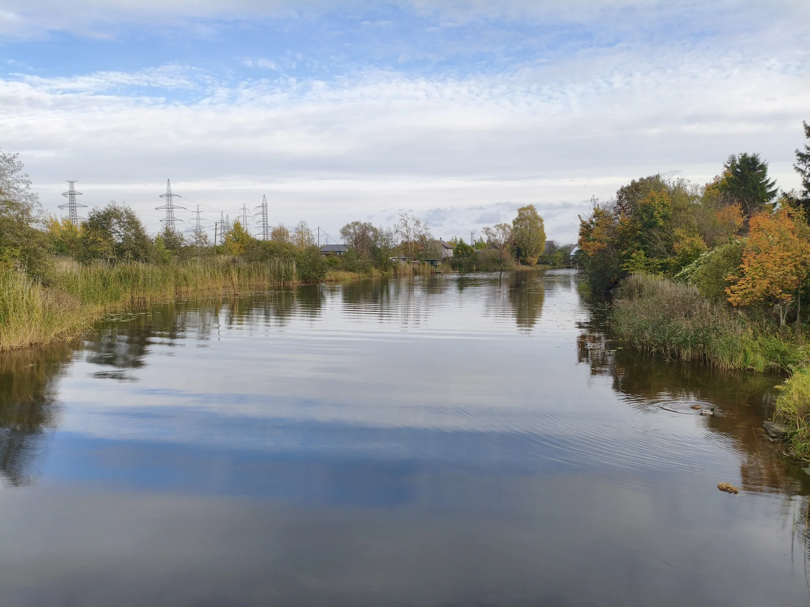
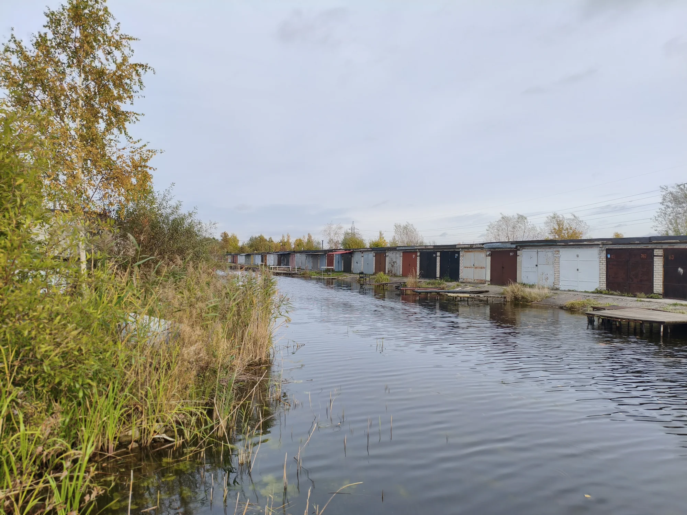
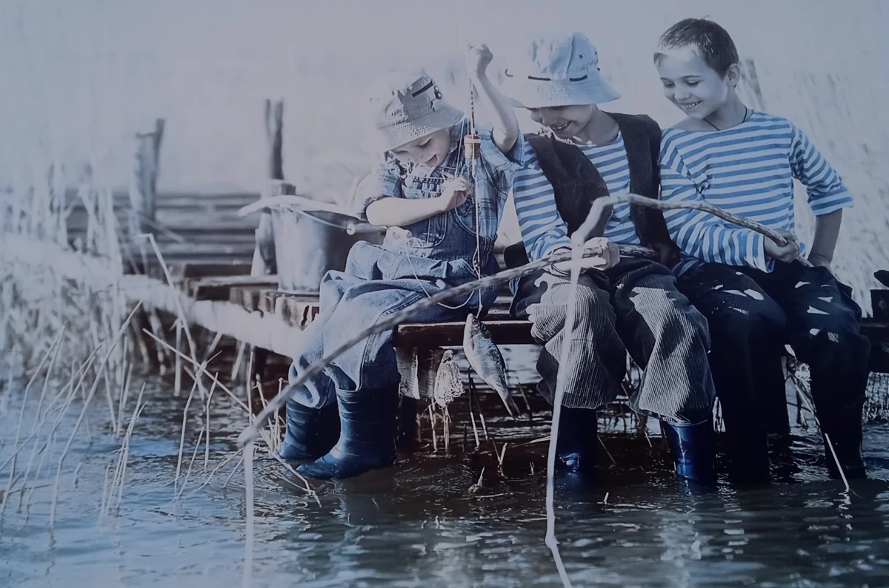
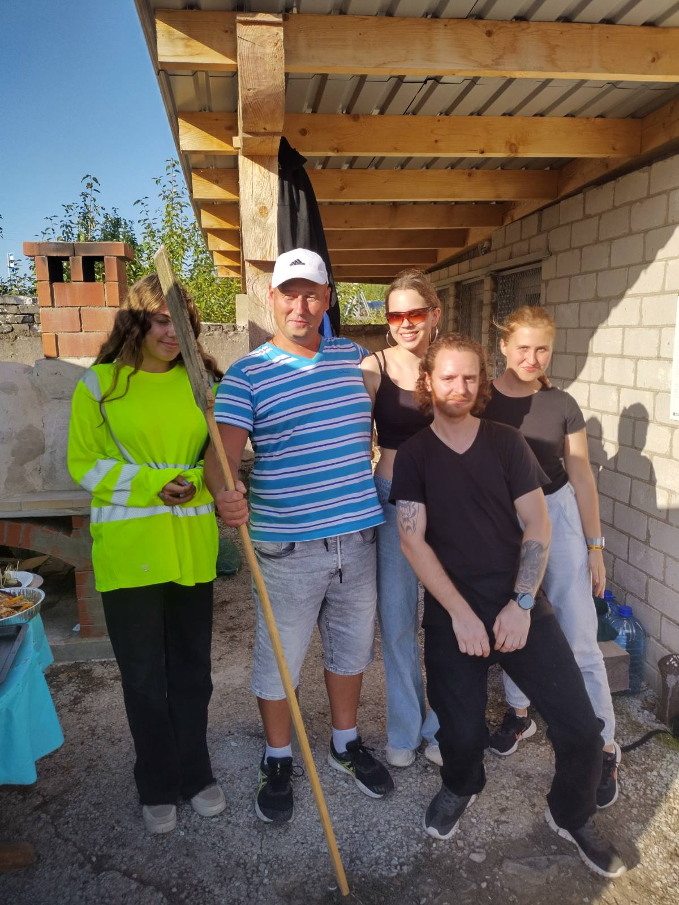
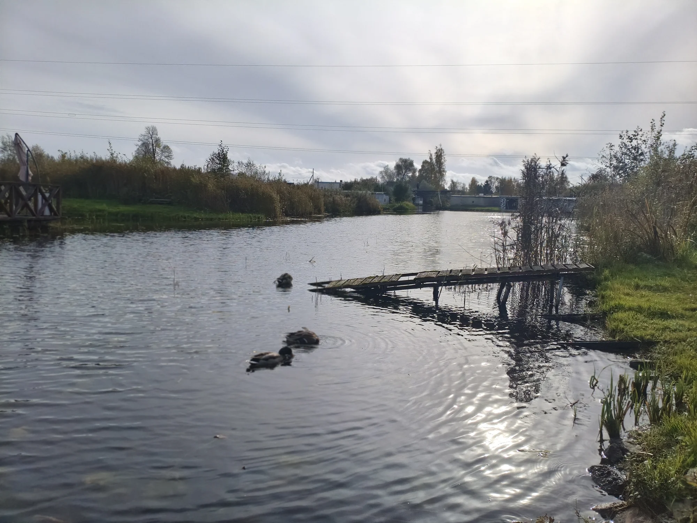

Every shore has a story.
Ours has a whole way of life.


A different rhythm
of the city.
On the shores of the Narva reservoir lies a world of canals, boat garages, small jetties and familiar faces. This is Kulgu — Narva Venice.
Here, people take to the water, meet their neighbours, make things and share stories. We collect photographs and memories, document events and introduce the people who bring this place to life.
Garages, jetties and life by the water.
A fresh view of Kulgu: boat garages line the canal, while the water connects neighbours and shores.
See the recent photographs ↗

People make
a place.
The first time out in a boat. Conversations by the garage. A summer you will always remember. Our photographs tell the big story of a small place.
Explore the photo archive ↗
Reasons to come together.
Explore past events ↗Keeping our shared moments alive.
Gatherings, shared projects and celebrations by the water. We are collecting stories of past events, with photographs and memories from those who were there.
Have a story
about Kulgu?
An old photograph, a warm memory or an idea for a gathering. Share it with us — let’s keep it together.
Write to us ↗Get involved and help